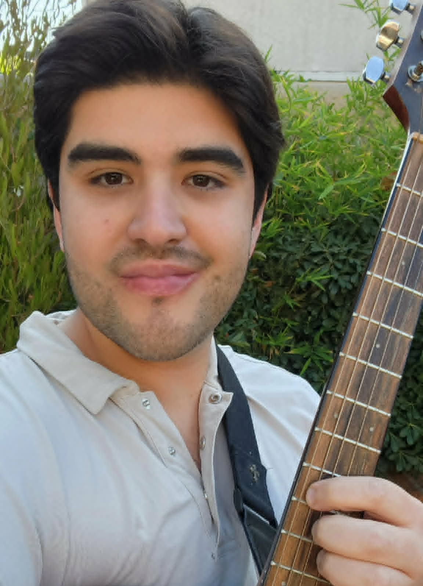

Instrumento y práctica
Se construye una experiencia musical progresiva que da estructura, desafío y motivación.
Un método que, a través del estudio de un instrumento musical, busca fortalecer e intervenir en aspectos fundamentales del desarrollo psicológico, con objetivos claros y atendiendo al contexto global del niño.
El trabajo clínico se da en conjunto al progreso en el instrumento, para apoyar de forma precisa el desarrollo de habilidades de concentración, disciplina, regulación y expresión emocional, interacción social y desarrollo de la identidad.
Aprenderemos a comunicar con un lenguaje sin palabras
Con esfuerzo y dedicación fortalecemos la percepción de logro y disciplina
Cómo la música puede transmitir diversas emociones y narrativas
Aquello que nos diferencia y nos hace únicos
El aprendizaje musical funciona como ancla para el desarrollo de habilidades superiores, dando a su vez herramientas para que el niño pueda relacionarse de otra forma con el mundo, desarrollar una identidad propia y poder potenciar elementos de la interacción social. El método contempla un trabajo sobre diferentes niveles que se trabajan de manera conjunta:
Se construye una experiencia musical progresiva que da estructura, desafío y motivación.
La música se usa para trabajar atención, tolerancia a la frustración, disciplina y autorregulación.
El proceso se observa con criterios terapéuticos y objetivos clínicos concretos, no solo musicales.
Se considera a la familia y el entorno del niño para desarrollar estrategias con un impacto real en el proceso.
Puede ser a elección entre piano, guitarra, bajo o batería. Será necesario para el desarrollo de las sesiones y la práctica en casa.
Idealmente en el lugar de residencia del niño o algún lugar intermedio que cumpla con los requisitos previos.
Se contempla el traslado al domicilio dentro del perímetro central de la ciudad de Santiago.
Se entrega un feedback por sesión a los padres para clarificar el proceso y se entrega un calendario al niño para el seguimiento del progreso en las sesiones.
Precio por hora estimada de trabajo presencial, que puede contemplar sesiones musicales completas, entrevistas psicológicas con padres/familiares o cualquier otro evento de previo acuerdo. Todo el trabajo de preparación de sesiones y feedback está contemplado en el costo por sesión.
Titulado en Psicología por la Universidad de Zaragoza, en España. Posgrado en gestión del talento en EADA Barcelona. Diplomado en innovación por la Universidad Católica de Chile. Certificado en musicoterapia por ADIPA. Cuento con experiencia como psicólogo para empresas y también en el ámbito clínico con niños. Mi trabajo está centrado en las terapias que cuentan con evidencia científica, como las terapias contextuales y el análisis funcional del comportamiento.
Por otra parte, me he desarrollado como músico desde los 11 años de edad, incorporándome a proyectos educativos con énfasis en la música y el arte, tomando clases particulares con destacados músicos nacionales e internacionales y realizando diversidad de cursos formativos reconocidos. Tengo un dominicio avanzado en guitarra y batería de jazz, además de manejo en otros instrumentos como el bajo, el piano y similares.

No. Si bien parte de las sesiones se desarrollan en el formato de clase de música, esto forma parte de un proceso mucho más amplio y con objetivos que no están centrados tanto en el progreso musical como en el proceso de terapia psicológica. La música funciona como un medio para objetivos superiores.
No. No es necesario tener conocimientos previos, aunque si los hay también son bienvenidos. Tampoco hace falta tener aptitudes innatas para la música, ya que, como se menciona anteriormente, la música en este caso es solo un medio. Lo importante es para qué nos está sirviendo aprender el instrumento, independiente de la rapidez con que se adquieren las habilidades técnicas.
Sí, mientras haya conformidad con la propuesta del programa y una mínima adherencia del niño/adolescente a trabajar con el formato musical, el programa se adapta para todos los casos, independiente de cualquier diagnóstico previo o gravedad funcional manifestada. Para esto sirve la sesión inicial de exploración, donde se evalúa la puesta en marcha y se dibuja una primera hoja de ruta.
De nuevo, dependiendo de la evaluación y la evolución del caso, las sesiones pueden hacer mayor énfasis en el trabajo sobre el instrumento, en desarrollo de dinámicas terapéuticas o en formato de entrevista con el niño o familiares para el debido seguimiento clínico. Cada caso es particular y este método se basa en un trabajo sobre distintas dimensiones de intervención.
Puedes agendar una sesión de exploración, en donde se pondrá a prueba el formato y se hará una primera evaluación del caso, de acuerdo a la cual surgirá una propuesta de desarrollo personalizado del programa. Esta sesión no es vinculante y sirve para que los padres decidan si es un método que puede funcionar para el caso concreto del niño.